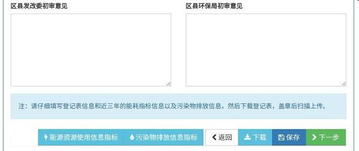

仔细核对“清洁生产审核登记表”填写的信息，加盖审核单位企业公章，并到相关部门审核盖章，扫描盖章后的登记表，点击“下一步”。

点击“下一步”后，审核单位填写的信息就不能够更改。
点击“清洁生产审核登记表上传”页面的“选择文件”，上传盖章后的“清洁生产审核登记表”扫描件。勾选“我保证上传文件的真实性”，并点击“提交”按钮。
没有委托咨询机构进行申报的审核单位，不用上传合同，委托咨询机构进行申报的审核单位，上传签订后的合同。